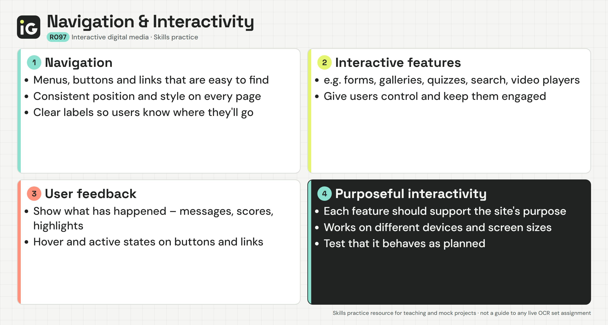

Navigation system
- Nav bar, buttons, hotspots

Build navigation and interactive components for your website.
Use this checklist to make sure you can cover every part of this topic.
Consistent navigation bars, clear buttons and hyperlinks let users move freely. Triggers and behaviours make the product respond to what users do.